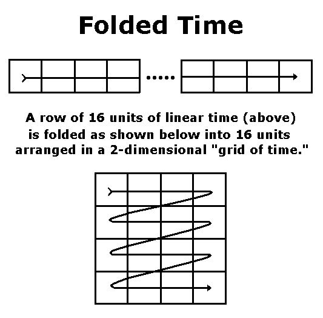
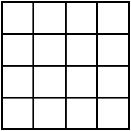
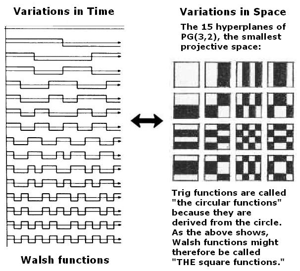
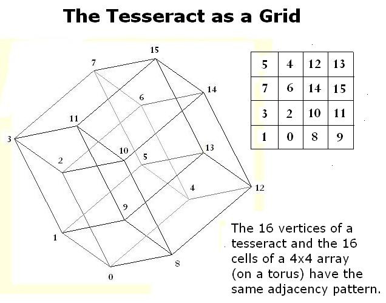
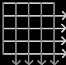

|
Finite Geometry Notes
|
Time Fold
by Steven H. Cullinane, Oct. 10, 2003
"It seems, as one becomes older,
That the past has another pattern,
and ceases to be a mere
sequence...."
-- T. S. Eliot, Four Quartets
Part I: Art Theory
From Rosalind Krauss, "Grids"
at http://www.rhizome.org/artbase/3019/grids/Rosalind.swf:
On Time and Grids
"In suggesting that the success [1] of the grid is somehow connected to its structure as myth, I may of course be accused of stretching a point beyond the limits of common sense, since myths are stories, and like all narratives they unravel through time, whereas grids are not only spatial to start with, they are visual structures that explicitly reject a narrative or sequential reading of any kind. But the notion of myth I am using here depends on a structuralist mode of analysis by which the sequential features of a story are rearranged to form a spatial organization [2].
[1] Success here refers to three things at once: a sheerly quantitative success, involving the number of artists in this century who have used grids; a qualitative success through which the grid has become the medium for some of the greatest works of modernism; and an ideological success, in that the grid is able-- in a work of whatever quality-- to emblematize the Modern.
[2] See Claude Levi-Strauss, Structural Anthropology, New York, 1963, particularly 'The Structural Analysis of Myth.' "
(The above remarks by Krauss were, apparently, originally published in "Grids," October (Summer 1979), 9: 50-64. See also The Originality of the Avant-Garde and Other Modernist Myths (1985), pp. 8-22.)
Part II: The Folding of Time
IIA... From a conversation on myth and time...
"We must conceive or imagine how Hermes flies and gets about when he carries messages from the gods - or how angels travel. And for this one must describe the spaces situated between things that are already marked out - spaces of interference, as I called them in the title of my second book on Hermes. This god or these angels pass through folded time, making millions of connections. Between has always struck me as a preposition of prime importance.
Follow the flight pattern of a fly. Doesn't time sometimes flow according to the breaks and bends that this flight seems to follow or invent? Likewise, my book Rome describes in its own way the baker's transformation... a certain folding of half a plane of dough over the other half, repeated indefinitely according to a simple rule, produces a design precisely comparable to the flight of the fly or the wasp, the one Verlaine in his famous sonnet describes as drunk from this crazy flight."
-- Michel Serres in Conversations on Science, Culture, and Time, Michel Serres and Bruno Latour, trans. Roxanne Lapidus. Ann Arbor: The University of Michigan Press, 1995. 64-5
IIB... From the mathematics of Diamond Theory...

Part III: Tradition and the Modern
In a 1922 essay, "Tradition and the Individual Talent," T. S. Eliot offered the following remarks on what he later called, in Four Quartets, the "intersection of the timeless with time":
"...the historical sense compels a man to write not merely with his own generation in his bones, but with a feeling that the whole of the literature of Europe from Homer and within it the whole of the literature of his own country has a simultaneous existence and composes a simultaneous order. This historical sense, which is a sense of the timeless as well as of the temporal and of the timeless and of the temporal together, is what makes a writer traditional. And it is at the same time what makes a writer most acutely conscious of his place in time, of his contemporaneity...."
Part IV: The Form, the Pattern
"... Only by the form, the
pattern,
Can words or music reach
The stillness...."
-- T. S. Eliot,
Four
Quartets

Four Quartets
For a discussion of the above
form, or pattern, see Diamond Theory.
Part V: Time and the Grid
Rosalind Krauss (Part I above) cites Levi-Strauss as supplying a "mode of analysis by which the sequential features of a story are rearranged to form a spatial organization."
Here is another such rearrangement, based on the "folding" shown in Part IIB above.
From Symmetry of Walsh Functions:

This correspondence may serve to illustrate what Eliot called (in Part II above) "a sense of the timeless as well as of the temporal and of the timeless and of the temporal together."
Eliot did not, of course, have, in writing Four Quartets, a 4x4 grid in mind. Such a structure does, however, help in finding the "possibilities of contrapuntal arrangement" that he sought.
For details of such possibilities, see Poetry's Bones.
For the question to which Eliot's "the point of intersection of the timeless with time" is the answer, see a work of undergraduate fiction:
"... even if we can break down time into component Walsh functions, what would it achieve?"
-- The Professor, in "Passing in
Silence,"
by Oliver Humpage
Part VI: Related Material
Quotations from Bakhtin on the Chronotope
Bakhtin and Children's Literature
From Mythic
to Linear:
Time in Children's Literature
A Wrinkle in Time, Chapter Five

Entries from the Journal of S. H. Cullinane:
Sunday, November 9, 2003 5:00 PM
For Hermann Weyl's Birthday:
A Structure-Endowed Entity
"A guiding principle in modern mathematics is this lesson: Whenever you have to do with a structure-endowed entity S, try to determine its group of automorphisms, the group of those element-wise transformations which leave all structural relations undisturbed. You can expect to gain a deep insight into the constitution of S in this way."
-- Hermann Weyl in Symmetry
Exercise: Apply Weyl's lesson to the following "structure-endowed entity."
What is the order of the resulting group of
automorphisms? (The answer will, of course, depend on which aspects of
the array's structure you choose to examine. It could be in the
hundreds, or in the hundreds of thousands.)
Tuesday, November 11, 2003 11:00 AM
Tuesday, November 11, 2003 11:11 AM
11:11
"Why do we remember the past
but not the future?"
-- Stephen Hawking,
A Brief History of Time,
Ch. 9, "The Arrow of Time"
For another look at
the arrow of time, see
Time Fold (the current page).
"Imaginary time is a relatively simple concept that is rather difficult to visualize or conceptualize. In essence, it is another direction of time moving at right angles to ordinary time. In the image at right, the light gray lines represent ordinary time flowing from left to right - past to future. The dark gray lines depict imaginary time, moving at right angles to ordinary time."
Is Time Quantized?
Yes.
Let us suppose, for the sake of argument, that time is in fact quantized and two-dimensional. Then the following picture,
from Time Fold (the current page), of "four quartets" time, of use in the study of poetry and myth, might, in fact, be of use also in theoretical physics.
In this event, last Sunday's entry (see above), on the symmetry group of a generic 4x4 array, might also have some physical significance.
At any rate, the Hawking quotation above suggests the following remarks from T. S. Eliot's own brief history of time, Four Quartets:
"It seems, as one becomes older,
That the past has another pattern,
and ceases to be a mere sequence....
I sometimes wonder if that is
what Krishna meant—
Among other things—or one way
of putting the same thing:
That the future is a faded song,
a Royal Rose or a lavender spray
Of wistful regret for those who are
not yet here to regret,
Pressed between yellow leaves
of a book that has never been opened.
And the way up is the way down,
the way forward is the way back."
Related reading:
Sunday, January 11, 2004 1:00 PM
Two-Dimensional Time
The following is from the Prime Quotes page at the website of Matthew R. Watkins...
"I have sometimes thought that the profound mystery which envelops our conceptions relative to prime numbers depends upon the limitations of our faculties in regard to time, which like space may be in essence poly-dimensional and that this and other such sort of truths would become self-evident to a being whose mode of perception is according to superficially as opposed to our own limitation to linearly extended time."
J.J. Sylvester, from "On certain inequalities relating to prime numbers", Nature 38 (1888) 259-262, and reproduced in Collected Mathematical Papers, Volume 4, page 600 (Chelsea, New York, 1973)
Translated into contemporary English, Sylvester is saying more-or-less this:"I have sometimes thought that if we were able to perceive time in some multi-dimensional way, more like a surface than like a line, then perhaps the distribution of prime numbers would be entirely self-evident, and would not seem at all mysterious to us."
Many thanks to Heckler & Coch (5/19/03) for pointing out the Sylvester quotation.
Related pages:
Page created Oct. 10, 2003. Updated Feb. 1, 2010.